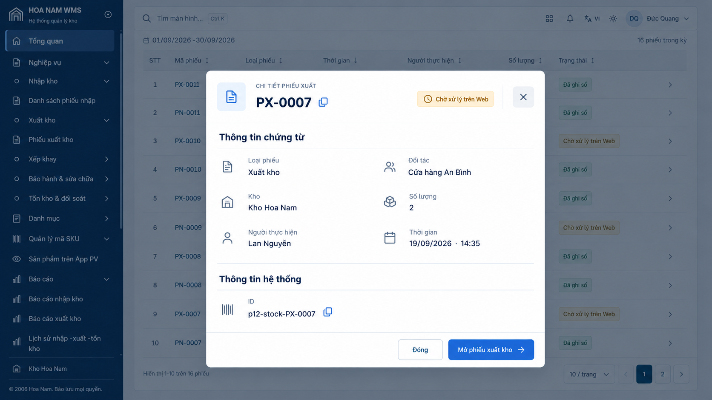
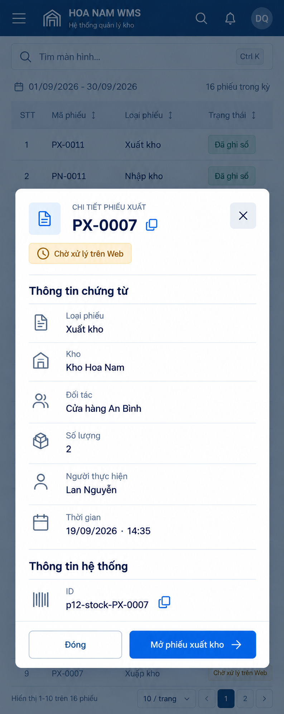

HOA NAM WMS · PREVIEW v44
Đối chiếu luồng Mở chứng từ
S01 → đúng phiếu nhập PN-0005 tại S12 / phiếu xuất PX-0004 tại S15.
Mở Preview · Kết quả chụp và xác minh trên domain
Source: af8148d248048fa3a2319428774a38425fd76288
Build: 4e35396cfaf3fe9287cb468c4e15ed2cc46754b7c19b717c93071ff62110f7ea
Cơ sở đối chiếu và phạm vi
Dialog S01 đối chiếu trực tiếp mẫu Desktop/Tablet đã duyệt (5.png, 6.png). Trang chứng từ nguồn mở từ S01 chưa có mẫu riêng; phần này được chỉnh theo chuẩn chung S12/S15 về chữ, khoảng cách, bo góc và vùng chạm, giữ nguyên bố cục nhóm và toàn bộ dữ liệu.
| Thành phần | Trước v43 | Sau sửa |
|---|
| Nút đóng Dialog | Nền/nét đóng ít nổi bật | Nền nhẹ, icon 24 px, vùng chạm 48/52 px |
| Nút sao chép mã và ID | Kích thước chưa đồng nhất | 44×44 CSS px |
| Footer Dialog | Nút nhỏ, tỷ lệ nút Tablet lệch mẫu | Chữ 16 px, cao 50/56 px; bố cục hai nút Tablet theo mẫu |
| Header / nhóm thông tin | Thiếu icon trạng thái, có hàng grid trống trên Tablet | Icon theo trạng thái, bỏ hàng trống, phân cách nhóm hệ thống |
| Trang chứng từ | Nhãn–giá trị 6 px, mã 13 px, thẻ bo 6 px | Nhãn–giá trị 8 px, mã 15 px, thẻ bo 8 px / padding 24 px |
| Serial / tệp đính kèm | Vùng chạm thấp | Vùng chạm ≥44 px |
Kiểm thử
- 32 trường hợp giao diện: Desktop/Tablet VI–EN–ZH, Light/Dark; bổ sung phone 390×844 và màn thấp 960×540. Đo vùng chạm, bounds Dialog/footer, focus và kích thước chữ.
- 32 kiểm tra điều hướng gồm đủ 16 chứng từ: ID/loại/fields/lines/serials đúng, reload/back, malformed links và danh sách hiện hữu.
- 15 kiểm thử đơn vị nguồn chứng từ/notification state/route PASS; typecheck và build PASS.
- Phần liên kết thông báo do chat phụ trách bàn giao: 14 nhóm exact-link và 21 nhóm thao tác PASS trước phát hành. Giữ riêng nguồn thông báo, không ghép theo mã phiếu.
Đo giao diện · Hồi quy điều hướng · QA thông báo
Rollback: v43 · appgprj_6adc45f730d88191ae066e8ff0c936aa~appgver_7601984613408191828b30c581b30609 · source 9ffff50b043871b73e6b678f7d50d594f987ff85.
Desktop · 1920×1080 · DPR 1
Ảnh chứng từ là ảnh toàn trang. Bấm ảnh để xem kích thước đầy đủ.
Mẫu Dialog S01 đã duyệt

Mẫu đã duyệt — dữ liệu minh họa PX-0007Dialog S01 · PN-0005
Chứng từ nguồn · PN-0005
Dialog S01 · PX-0004
Chứng từ nguồn · PX-0004
Tablet · 800×1280 CSS px · DPR 2
Ảnh chứng từ là ảnh toàn trang. Bấm ảnh để xem kích thước đầy đủ.
Mẫu Dialog S01 đã duyệt

Mẫu đã duyệt — dữ liệu minh họa PX-0007Dialog S01 · PN-0005
Chứng từ nguồn · PN-0005
Dialog S01 · PX-0004
Chứng từ nguồn · PX-0004